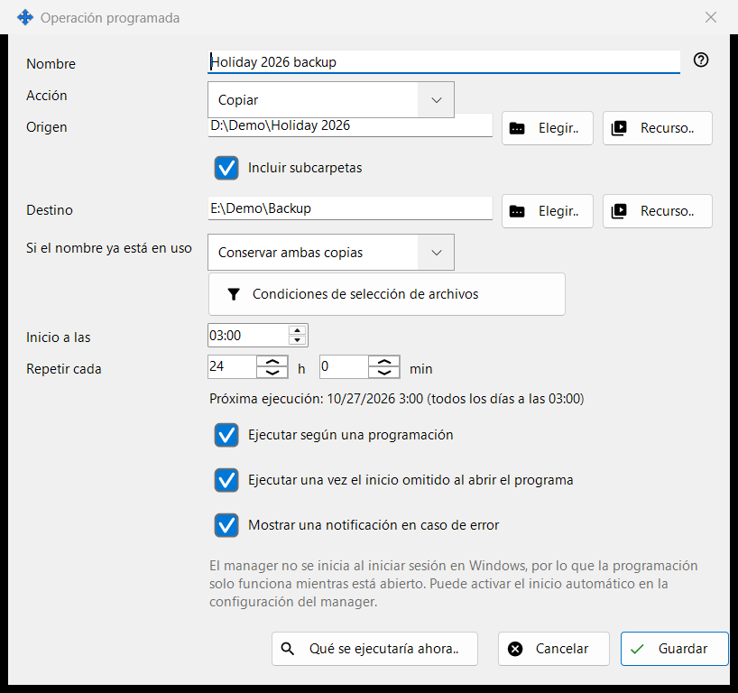
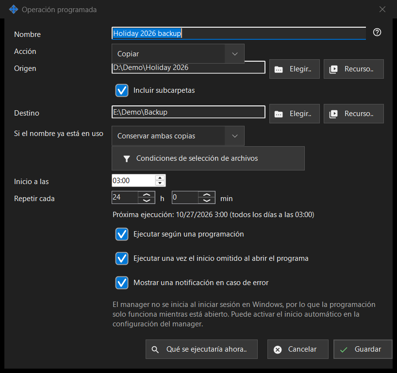

Operación programada
Para qué sirve
Edita una operación de archivos programada: copiar, mover, eliminar o archivar archivos de un origen a un destino con una programación repetida. Se abre desde «Nueva..» o «Modificar..» en la página «Operaciones de archivos programadas» de los ajustes de Share Manager, y desde el elemento del menú de carpeta del visor «Programar una operación para esta carpeta..», que rellena esa carpeta como origen.


En este orden
- Escribe un Nombre y elige la Acción.
- Define el Origen y, para copiar, mover y archivar, el Destino, con «Elegir..», «Recurso..» o «A través de Google Drive».
- Para copiar y mover, elige qué ocurre «Si el nombre ya está en uso».
- Abre «Condiciones de selección de archivos» para acotar los archivos.
- Define «Inicio a las» y «Repetir cada» y deja marcada «Ejecutar según una programación».
- Revisa «Qué se ejecutaría ahora..» y pulsa «Guardar».
Los elementos
Acción y conflictos de nombre
La Acción es Copiar, Mover, Eliminar o Archivar, y la ventana muestra solo las filas que esa acción necesita: Eliminar no tiene Destino; «Si el nombre ya está en uso» (Omitir, Sobrescribir, Conservar ambas copias) aparece solo para Copiar y Mover; «Eliminar los archivos originales tras verificar el archivo comprimido» aparece solo para Archivar y quita los originales únicamente después de que el archivo comprimido se haya releído y comprobado.
Origen y destino
Escribe una ruta completa o pulsa «Elegir..». «Recurso..» elige un servidor SFTP o una carpeta de red de la lista de recursos del visor y no se ofrece para Archivar, que solo admite carpetas normales y Google Drive. «A través de Google Drive» aparece solo cuando has iniciado sesión en Drive o ese lado ya lo usa. Cuando «Incluir subcarpetas» está desactivada, solo se procesan los archivos de la propia carpeta de origen. «Guardar» rechaza las carpetas del sistema y de programas, y un destino igual al origen o situado dentro de él, e indica qué está mal.
Eliminación de archivos
Cuando se vayan a quitar archivos (Eliminar, o Archivar con la opción de los originales), una línea «Eliminar: ..» indica adónde van: a la Papelera de reciclaje, o de forma permanente con el motivo, por ejemplo que un disco de red o extraíble no tiene Papelera. En una operación así, Intro no guarda; pulsa «Guardar» a propósito. Una ejecución programada nunca hace preguntas y registra adónde fueron los archivos eliminados.
Condiciones de selección de archivos
El panel se abre solo cuando las condiciones difieren de las predeterminadas. Tipos de archivo: Todos los archivos, Imágenes, Audio, Vídeo, Documentos («Todos los archivos» desactiva los otros cuatro). Modificado: Todo el período, Nuevos desde la última ejecución, Última hora, Últimas 24 horas. «Máscara de nombre» y «Excluir por máscara» admiten varias máscaras separadas por punto y coma, por ejemplo *.jpg;IMG_??.png, comparadas con el nombre del archivo. «Más antiguo que» y «Más reciente que» se expresan en días y horas, «Mayor que» y «Menor que» en MB. «Incluir archivos ocultos y del sistema» está desactivada de forma predeterminada.
Programación
«Inicio a las» fija la hora del día y «Repetir cada» el intervalo en horas y minutos; un número entero de días se repite a la misma hora. La línea bajo ellos muestra «Próxima ejecución: hora (regla)» o «La programación está desactivada: la operación se ejecuta solo manualmente.» «Ejecutar una vez el inicio omitido al abrir el programa» y «Mostrar una notificación en caso de error» son opciones independientes. Otra línea indica que la programación solo funciona mientras Share Manager está en ejecución y si se inicia al iniciar sesión en Windows; nada de esta ventana cambia el inicio automático.
Vista previa y Guardar
«Qué se ejecutaría ahora..» enumera los archivos que procesaría la operación y no cambia nada; una ejecución no la necesita. «Guardar» almacena la operación o enumera lo que hay que corregir. «Cancelar» descarta tus cambios.
Ajustes del gestor · Ajustes de uso compartido SFTP · Ajustes del servidor de intercambio